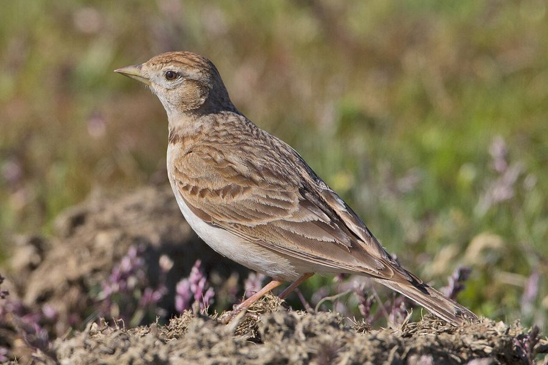

पुल्लुकGreater Short-toed Lark
Calandrella brachydactyla · Alaudidae · BRD-0375

- Scientific name वैज्ञानिक नाम
- Calandrella brachydactyla (Leisler, 1814)
- Family कुल
- Alaudidae
- Hindi हिंदी
- पुल्लुक
- Local names स्थानीय नाम
- pulluk, baghaira, bagheyri, greater short-toed lark
- Status here यहाँ की स्थिति
- native
- Movement आवागमन
- Winter visitor
- Known from कहाँ दर्ज
- Others have published records from the wider Awadh–Purvanchal plain, none yet from Basti–Ayodhya अवध–पूर्वांचल से दूसरों के प्रकाशित अभिलेख, बस्ती–अयोध्या से अभी नहीं
- IUCN IUCN
- LC
- Review समीक्षा
- not yet reviewed
When to look कब देखें
Winter visitor शीतकालीन प्रवासी. Expected mainly in February, March, October. मुख्यतः फ़रवरी, मार्च, अक्टूबर में अपेक्षित।
Breeding from South Europe through Palestine and Asia Minor to Baluchistan; in winter found in India south to Belgaum, Rajputana, Central India, and the United Provinces (Baker 1926). GBIF records in Uttar Pradesh fall in February, March, and October. All migrants and visitors →
Tell it apart from इनसे अलग पहचानें
पुल्लुक / Greater Short-toed Lark
Calandrella brachydactyla (Leisler, 1814) — Alaudidae
पुल्लुक — खुले रेतीले मैदानों, बंजर जमीनों और कटाई के बाद खाली पड़े खेतों में झुंडों में विचरण करने वाली छोटी चंडूल। इसकी पीठ रेत जैसी हल्की भूरी और धारियों वाली होती है, नीचे का हिस्सा सफेद-बादामी होता है, और गर्दन के दोनों ओर एक-एक छोटा काला धब्बा दिखाई देता है। यह जमीन पर तेजी से दौड़कर गिरे हुए बीज और दाने चुगती है। सर्दियों में यह हमारे मैदानों में आती है।
Quick Identification त्वरित पहचान
| Feature | Description |
|---|---|
| Habit | Small pale sandy lark running in loose flocks across bare fields and dry river sand |
| Upperparts | Upper plumage sandy-buff, each feather boldly streaked with blackish; reddish tinge on crown and rump (Baker 1926, p. 324) |
| Neck Patches | Dusky-brown patch on either side of the upper breast (Baker 1926, p. 324) |
| Underparts | Dull white lower plumage washed with fulvous-brown on breast and flanks, with a few small black streaks on breast (Baker 1926, p. 324) |
| Bill & Head | Upper mandible horny-brown, lower mandible yellowish-horny; lores and supercilium fulvous-white (Baker 1926, p. 324) |
| Tail Pattern | Central tail-feathers dark brown edged rufous-sandy; outermost pair mostly fulvous-white (Baker 1926, p. 324) |
Field tip: Look for small sandy larks feeding in open stubble fields that run with great speed on foot and flush with swift flight (Baker 1926, p. 325).
हिंदी — कैसे पहचानें:
रेतीला बादामी शरीर जिस पर काली धारियां हों, गले के दोनों तरफ मटमैला-भूरा धब्बा, और जमीन पर बहुत तेज दौड़ने की आदत (बेकर 1926)।
Morphology आकारिकी
Measurements as given by Baker (1926) for nominate Calandrella brachydactyla brachydactyla:
| Measurement | Range |
|---|---|
| Biometrics | Wing 91 to 98 mm.; tail 58 to 63 mm.; tarsus 19 to 21 mm. ; culmen 9 to 10 mm. (Baker 1926) |
Stuart Baker (1926, p. 324) described the adult plumage: "Upper plumage sandy-buff, each feather boldly streaked with blackish and a more pronounced reddish tinge on the crown, rump and upper tail-coverts ; central tail-feathers dark brown broadly edged with rufous-sandy ; lateral tail-feathers black narrowly edged with rufous, the penultimate pair broadly edged with pale fulvous on the outer web, the outermost pair with all the outer web and much of the inner web fulvous-white... lores, supercilium and round the eye fulvous-white ; ear-coverts light brown ; a dusky-brown patch on either side of the upper breast ; lower plumage dull white washed with fulvous-brown on breast and flanks and almost always with a few small black streaks on the breast."
Colours of soft parts: "Iris brown ; upper mandible horny-brown, darker on the culmen, lower mandible yellowish-horny ; legs and feet fleshy-brown or yellowish -fleshy" (Baker 1926, p. 324).
Vocalisations: Flight calls consist of dry, rattling chirps trr-rit or drri-drri, delivered when flocks rise and wheel over winter crop fields (Grimmett et al. 2011).
हिंदी:
बेकर (1926) के अनुसार डैने 91 से 98 मिमी, पूंछ 58 से 63 मिमी, टार्सस 19 से 21 मिमी और चोंच 9 से 10 मिमी होती है। आंखें भूरी, चोंच सींग जैसी भूरी व नीचे से पीली, और पैर मांसल-भूरे होते हैं।
Behaviour & Ecology व्यवहार और पारिस्थितिकी
Baker (1926, p. 325) recorded: "This Lark frequents both cultivated country and sandy plains, feeding on grass and other seeds. It is said to be a tame, confiding bird with a sweet, though not powerful little song which it utters both on the wing and when perched on a stone or clod. It is very active on foot and runs with great speed."
Flocks forage systematically across open stubble and dry fallow lands, picking up fallen weed seeds and grain kernels while maintaining vocal contact (Ali & Ripley 1987).
हिंदी:
बेकर (1926) के अनुसार यह खुले खेतों और रेतीले मैदानों में रहती है तथा घास व अन्य बीज खाती है। यह जमीन पर बहुत तेजी से दौड़ती है और पत्थर या ढेले पर बैठकर मीठा छोटा गीत गाती है।
Life Cycle / Phenology जीवन चक्र
Baker (1926, pp. 324–325) recorded that the Short-toed Lark "breeds in South Europe from April to July and occasionally both earlier and later. The nest is the usual Lark’s cup-shaped affair of grass... placed on the ground in a natural depression under some sheltering tuft of grass or weed."
In Uttar Pradesh, published GBIF occurrences fall in February, March, and October, matching the arrival of winter flocks and their northward pre-breeding migration.
हिंदी:
बेकर (1926) के अनुसार यह दक्षिण यूरोप में अप्रैल से जुलाई के दौरान जमीन पर घास के तूदे के नीचे घोंसला बनाता है। उत्तर प्रदेश में इसके रिकॉर्ड अक्टूबर, फरवरी और मार्च में दर्ज हैं।
Host Plants or Prey आहार
Baker (1926, p. 325) recorded that it frequents cultivated country and sandy plains, "feeding on grass and other seeds."
हिंदी:
बेकर (1926) के अनुसार इसका मुख्य आहार घास और अन्य पौधों के बीज हैं।
Predators / Natural Enemies शत्रु
Open-country raptors including falcons, harriers, and accipiters, as well as terrestrial predators, hunt wintering flocks across exposed farmland.
हिंदी:
खुले खेतों में शिकारी पक्षी जैसे शिकरा, बाज और जमीन पर लोमड़ी या जंगली बिल्लियां इनका शिकार करती हैं।
Agricultural / Human Relevance कृषि प्रासंगिकता
Feeds on waste grain in harvested paddy and wheat stubble and gleans agricultural weed seeds, causing no damage to standing crops. Protected under the Wildlife (Protection) Act, 1972.
हिंदी:
यह कटे हुए खेतों में गिरे दाने और खरपतवार के बीज खाता है और खड़ी फसल को नुकसान नहीं पहुंचाता। यह वन्यजीव (संरक्षण) अधिनियम, 1972 के तहत संरक्षित है।
Expected Locally स्थानीय रूप से अपेक्षित
Not a field record. Written from published accounts for eastern Uttar Pradesh. No confirmed local sighting yet — if you have seen it, that is what the atlas needs.
अभी तक स्थानीय पुष्टि नहीं। यह विवरण प्रकाशित स्रोतों से है, किसी अवलोकन से नहीं।
Open sandy floodplains along the Ghaghra river, dry fallow tracts between Basti and Ayodhya, and post-harvest mustard or cereal stubbles offer typical winter foraging habitat.
GBIF holds published records from the wider Awadh–Purvanchal plain, none yet from Basti–Ayodhya. Regional published records come from Lucknow (three records), Lakhimpur Kheri (one iNaturalist record), and Unnao (one record), contributed by 5 observers between 2020 and 2026 during February, March, and October. The nearest regional occurrences lie in Lucknow and Lakhimpur Kheri.
A first record would be a photograph with place and date, sent through the About page.
Distribution वितरण
Global range: Baker (1926, p. 324) recorded: "Breeding from South Europe through Palestine and Asia Minor to Baluchistan. In India it is found in Winter South to Belgaum, Rajputana and Central India and in the United Provinces."
In India: Baker (1926, pp. 324–325) recorded that it occurs in winter south to "Belgaum, Rajputana and Central India and in the United Provinces," noting that it is "undoubtedly occasionally found in the North-West Frontier Provinces, whilst scattered individuals occur as already stated much farther South."
In Uttar Pradesh: Winter occurrence records exist from Lucknow, Lakhimpur Kheri, and Unnao across open agrarian plains.
In Basti district / eastern UP: GBIF holds no record from Basti or Ayodhya; the nearest records are from Lucknow and Lakhimpur Kheri.
हिंदी:
बेकर (1926) के अनुसार यह दक्षिण यूरोप से बलूचिस्तान तक प्रजनन करता है और सर्दियों में भारत में बेलगाम, राजपूताना, मध्य भारत और संयुक्त प्रांत (उत्तर प्रदेश) तक पाया जाता है। उत्तर प्रदेश में इसके रिकॉर्ड लखनऊ, लखीमपुर खीरी और उन्नाव के खुले इलाकों से हैं।
Research Questions शोध प्रश्न
- What post-harvest field characteristics (such as mustard stubble height or soil sandiness) attract wintering lark flocks in central Uttar Pradesh? / मध्य उत्तर प्रदेश में कटाई के बाद खेतों की कौन सी स्थिति इन लार्क के झुंडों को आकर्षित करती है?
- How do Greater Short-toed Larks segregate ecologically from resident Sand Larks along riverbed silt deposits? / नदी के रेतीले किनारों पर यह पक्षी स्थानीय सैंड लार्क से किस प्रकार अलग रहकर आहार तलाशता है?
- What proportion of wintering short-toed larks on the Gangetic plain represent the rufous-toned taxon dukhunensis?
- Do winter flocks return consistently to the same dry fallow tracts across successive seasons?
- Can local students distinguish Greater Short-toed Larks from Ashy-crowned Sparrow-Larks using breast markings and foraging flight? (An observer can look for the pale unstreaked belly and small lateral neck smudges.)
Similar Species मिलती-जुलती प्रजातियाँ
| Species | How to tell apart | हिंदी | |
|---|---|---|---|
| [[sand_lark | Sand Lark]] (Alaudala raytal) | Paler sandy-grey plumage, finer streaks on upper breast, strictly confined to river sandbanks (Baker 1926, p. 329) | सैंड लार्क |
| [[ashy_crowned_sparrow_lark | Ashy-crowned Sparrow-Lark]] (Eremopterix griseus) | Male has solid black belly and chin; female has stouter finch-like bill and lacks neck patches (Ali & Ripley 1987) | दिवरी |
| [[oriental_skylark | Oriental Skylark]] (Alauda gulgula) | Heavily streaked breast and mantle, conspicuous crest, longer bill, lacks isolated dark neck patches (Baker 1926, p. 319) | भरत |
| [[crested_lark | Crested Lark]] (Galerida cristata) | Prominent pointed upright crest, larger size, heavily streaked breast, stout bill (Baker 1926, p. 341) | चंडूल |
| [[rufous_tailed_lark | Rufous-tailed Lark]] (Ammomanes phoenicura) | Deep rufous rump and upper tail-coverts, rufous underparts, lacks dark lateral neck patches (Baker 1926, p. 350) | रेतल |
| [[bengal_bushlark | Bengal Bushlark]] (Mirafra assamica) | Mottled grey-brown plumage, large rufous wing patches in flight, heavy bill, upright posture on bushes (Baker 1926, p. 337) | बंगाल बुशलार्क |
Field rule: The unstreaked buff-white underparts, isolated small dark lateral breast patches, and sandy-streaked mantle distinguish the Greater Short-toed Lark (Baker 1926, p. 324).
हिंदी:
सैंड लार्क केवल नदियों के रेत पर रहती है; दिवरी के पेट पर काला रंग होता है; भरत और चंडूल के सीने पर गहरी धारियां और सिर पर कलगी होती है; रेतल की पूंछ का आधार कत्थई होता है।
Taxonomy & Classification वर्गीकरण
Original description. Described by Johann Philipp Achilles Leisler in 1814 in Annalen der Wetterauischen Gesellschaft für die Gesammte Naturkunde (Vol. 3, Heft 2, p. 357, pl. 19), under the basionym Alauda brachydactyla, from near Hanau, Germany.
Subspecies. Stuart Baker (1926, pp. 324–328) treated three subspecies for the subcontinent: nominate Calandrella brachydactyla brachydactyla, C. b. longipennis (Eversmann, 1848), and C. b. dukhunensis (Sykes, 1832). Modern authorities (including Rasmussen & Anderton 2012 and IOC) frequently treat Calandrella dukhunensis (the Rufous Short-toed Lark) as a distinct phylogenetic species, while retaining longipennis as an eastern race of C. brachydactyla.
Family and order placement. Order Passeriformes, family Alaudidae (larks), genus Calandrella.
IUCN status rationale. Evaluated as Least Concern (LC) on the IUCN Red List (BirdLife International 2021).
हिंदी:
लीस्लर ने 1814 में जर्मनी से इसका वर्णन अलाउदा ब्रैकिडेक्टिला के नाम से किया था। बेकर (1926) ने इसकी तीन उपप्रजातियां बताई थीं। आधुनिक वर्गीकरण में दखिन की रूफस लार्क को कभी-कभी अलग प्रजाति माना जाता है। यह संकट-मुक्त (LC) है।
Photo Gallery फोटो गैलरी
No photos yet — add field photos to media/species/greater_short_toed_lark/ and run node scripts/sync_photos.js.
Photos needed आवश्यक फोटो
- [ ] Adult bird foraging in stubble showing lateral neck patches and unstreaked belly (खेत में दाना चुगता पक्षी जिसमें गर्दन के काले धब्बे दिखें)
- [ ] Flock in low undulating flight over fallow field (खेत के ऊपर उड़ते हुए झुंड का दृश्य)
References संदर्भ
- Leisler, J. P. A. (1814). Annalen der Wetterauischen Gesellschaft für die Gesammte Naturkunde. Vol. 3. Heft 2. Hanau, p. 357 (as Alauda brachydactyla).
- Baker, E. C. S. (1926). The Fauna of British India, Including Ceylon and Burma. Birds. Vol. 3. 2nd ed. Taylor & Francis, London, pp. 324–326 (as Calandrella brachydactyla).
- Ali, S. & Ripley, S. D. (1987). Compact Handbook of the Birds of India and Pakistan. 2nd ed. Oxford University Press, New Delhi.
- Grimmett, R., Inskipp, C. & Inskipp, T. (2011). Birds of the Indian Subcontinent. 2nd ed. Christopher Helm, London.
- Rasmussen, P. C. & Anderton, J. C. (2012). Birds of South Asia: The Ripley Guide. 2nd ed. Smithsonian Institution and Lynx Edicions, Washington, D.C. and Barcelona.
- BirdLife International (2021). Calandrella brachydactyla. The IUCN Red List of Threatened Species 2021: e.T103766207A199580368. doi:10.2305/iucn.uk.2021-3.rlts.t103766207a199580368.en
- GBIF Occurrence Data — Calandrella brachydactyla, India (2025).
Source file: species/fauna/birds/greater_short_toed_lark.md